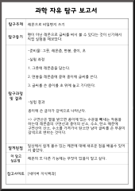
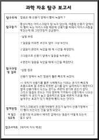
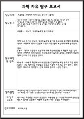
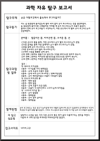
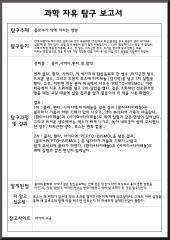
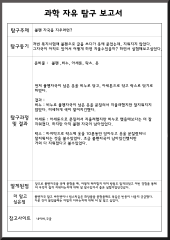
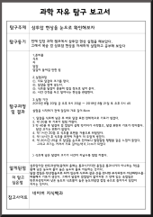

탐구 보고서

밑에 이미지를 클릭하면 저장할 수 있어요!

콜라와 반응하는 물질은 어떤것이 있을까?
-탐구동기
콜라에 멘토스를 넣으면 폭발이 일어나는데 다른 것들을 넣으면
어떻게 될지 궁금해서 실험을 해봤다.
탐구 과정 및 결과
-준비물:콜라,멘토스,껌,아이스크림
-실험과정:
1. 콜라를 100ml씩 종이컵에 붓는다
2. 각각 음료에 멘토스,껌,아이스크림을 넣는다......

-탐구동기
레몬으로 비밀편지 쓰기
-탐구동기
펜이 아닌 레몬으로 글씨를 써서 볼 수 있다는 것이 신기해서
직접 실험을 해보았다.
탐구 과정 및 결과
-준비물:그릇, 레몬즙, 면봉, 종이, 초
-실험과정:
1.그릇에 레몬즙을 담는다.
2.면봉을 레몬즙에 묻혀 종이에 글씨를 쓴다.......

사과는 왜 갈변할까?
-탐구동기
어느날 먹다가 남은 사과의 색깔이 갈색으로
변하는 것을 보고 왜 그럴까 궁금해서 실험을 하게 되었다.
탐구 과정 및 결과
-준비물:종이컵, 식초, 물, 소금물
-실험과정:
1.각각의 종이컵에 식초, 소금물, 물을 넣는다.
2.그리고 한 개는 상온에 그냥 둔다.......

-탐구동기
얼음은 왜 선풍기 앞에서 빨리 녹을까?
-탐구동기
평상시에는 아이스크림이 잘 녹지 않는데, 여름철 선풍기 앞에서
더 빨리 녹는 아이스크림 때문에 선풍기를 피해서.....
탐구 과정 및 결과
-준비물:얼음,선풍기
-실험과정:
1.얼음을 아무런 조건도 없이 그냥 녹인다.
2.얼음이 완전히 녹았을 때 에 시간을 측정한다.......

-탐구동기
초콜릿은 포장지에 따라 녹는 속도가 다를까?
-탐구동기
친구가 해외에 나갔다가 초콜릿을 선물로 사왔는데, 초콜릿은 왜 종이 상자나 박스로 되어있고 포장지는 알루미늄으로.....
탐구 과정 및 결과
-준비물:비닐랩, 알루미늄포일,종이,초콜릿
-실험과정:
1. 같은 크기의 비닐랩, 알루미늄포일,종이의 포장지를 준비해서 초콜릿을 각각의 포장지에 넣는다.
2.시간별로 무엇이 가장 빨리 녹는지에 대해 탐구한다......

-탐구동기
손은 어떤 조건에서 물속에서 쭈그라들까?
-탐구동기
어느 날 목욕탕에 들어갔는데 얼마 되지 않아 손이 쭈그러드는 것을 발견하였다.
늘 목욕탕에 들어서면 그래왔지만.....
탐구 과정 및 결과
-준비물:얼음이 든 물, 미지근한 물, 뜨거운 물, 손
-실험과정:
1. 다른 온도의 물을 통해, 어떤 온도에서 손이 빨리 쭈그러드는지 관찰한다.
2. 다른 용액을 통해 어떤 용액에서 손이 빨리 쭈그러드는지 관찰한다......

-탐구동기
음료수가 약에 끼치는 영향
-탐구동기
전에 외할머니께서 약은 음료수와 같이 복용하면 안 된다고 하신 말씀을 듣고, 의문이 생겨 사이다로 실험 해 본 적이 있다....
탐구 과정 및 결과
-준비물:콜라, 사이다, 환타, 물, 알약
-실험과정:
1. 먼저 콜라, 환타, 사이다, 이 세가지의 탄산음료와 찬 생수 ,미지근한 생수, 뜨거운 생수, 그리고 오렌지 쥬스에 타이레놀...
2. 그후, 이번엔 아는 분이 미국에서 사오신 ‘PE[TO-BISMOL’ 이란 미국에서 사온 소화제를 넣는다......

-탐구동기
볼펜자국을 지우려면?
-탐구동기
저번 쪽지시험때 볼펜으로 글을 쓰다가 옷에 묻었는데, 지워지지 않았다. 그자국이
아직도 있어서 어떻게 하면 지울수있을까?.....
탐구 과정 및 결과
-준비물:볼펜 ,비누, 아세톤, 락스, 옷
-실험과정:
1. 먼저 볼펜자국이 남은 옷을 비누로 닦고, 아세톤으로 닦고 락스로 닦기로 하였다.
2. 비누로 볼펜자국이 남은 옷을 문질러서 지울려했지만 잘 지워지지않았다.
미세하게 색이 옅어지긴했다.

구리의 녹슬음 정도와 녹슬음을 방지하는 방법은 무엇일까?
-탐구동기
방학과제로 과학탐구 주제를 찾아보던 중, 구리의 녹슬음에 대한 주제를 우연히 보게 되었다.
직접 구리의 녹슬음에 대해서 실험을 해보면 재밌을거 같았다. 구리의 녹슬음은 어떻게 나타날까? 하는 생각을 갖으며
이 실험을 시작하게 되었다.
-실험 방법 및 절차
1.실험 준비물을 준비해둔다.
컵에 담긴 액체 ( 물, 소금물, 콜라, 식초)에 구리를 넣어본다
......

커피 가루가 퍼지는 확산
-탐구동기
엄마가 커피를 타고있는걸 보는데 커피 가루가 물에 퍼지는 걸 보고 탐구해보고 싶어졌다
탐구 과정 및 결과
-준비물:콜라,멘토스,껌,아이스크림
확산이란 물질이 원자나 분자의 무질서한 열운동을 통해 농도(concentration)가 높은 영역에서 낮은 영역으로 평균적으로
이동하는 것이다.그래서 커피를 타게 되면 커피가루가 위에서 아래로 이동하게 되면 섞이는 것이다
......

우유로 플라스틱 만들기
-탐구동기
우유로 플라스틱을 만들 수 있는 원리가 무엇인지 알고 싶었다.
탐구 과정 및 결과
-준비물:우유 500 ml, 식초 100ml, 비커, 온도계, 스포이드, 틀, 주걱, 냄비, 버너, 거즈
-실험과정:
1.우유를 냄비에 넣고 끓었을 때 식초를 넣는다.
2. 식초와 우유를 잘 저어준 후 식힌다......

-탐구동기
삼투압 현상을 눈으로 확인해보자
-탐구동기
전에 있던 과학 캠프에서 삼투압 현상 실험을 해보았다. 그래서 복습 겸 삼투압 현상을 자세하게 실험하고 공부해 보았다.
탐구 과정 및 결과
-준비물: 식초, 자, 달걀, 달걀이 들어갈 만한 컵
-실험과정:
1.자로 달걀의 크기를 잰다.
2. 달걀을 컵에 넣는다......